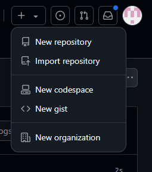
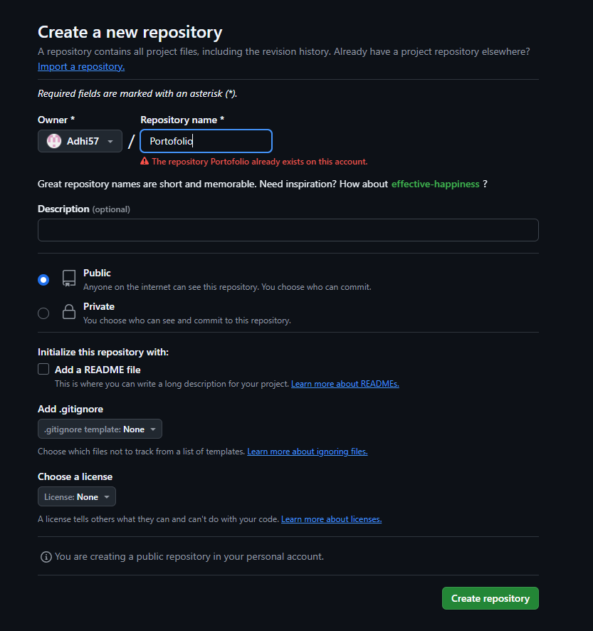
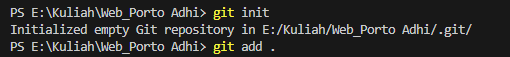
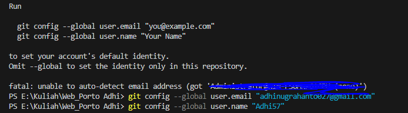
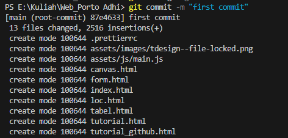
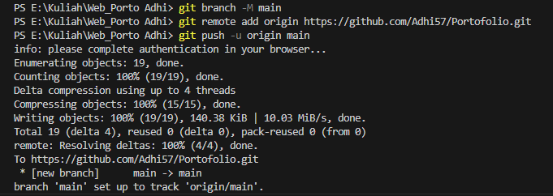
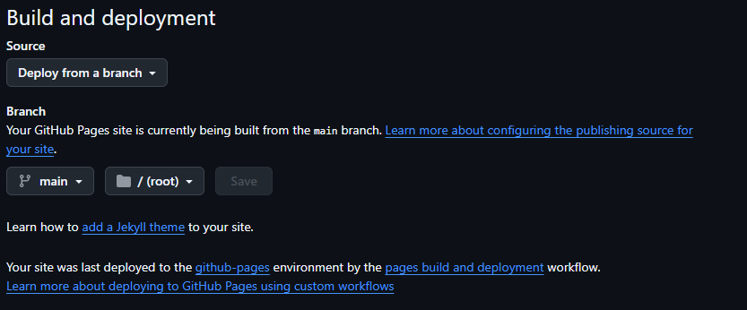
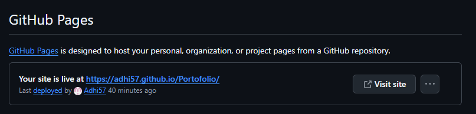

Tutorial: Deploy Website ke GitHub Pages
Ikuti langkah-langkah berikut untuk men-deploy website HTML sederhana ke GitHub Pages.
Langkah 1: Buat Repository di GitHub
- Masuk ke akun GitHub Anda.
- Klik ikon "+" di kanan atas layar dan pilih "New repository". 
- Masukkan nama repository (misalnya, Portfolio).
- Tambahkan deskripsi jika diperlukan (opsional).
- Pilih opsi Public agar orang lain dapat mengakses website Anda.
- Klik Create repository untuk membuat repository baru. 
Langkah 2: Siapkan File HTML
Buat file HTML, CSS, dan JavaScript sesuai kebutuhan.
Langkah 3: Upload File ke Repository dengan VSCode
- Buka folder proyek Anda di Visual Studio Code.
- Buka terminal di VS Code dengan menekan Ctrl + ` (atau pilih Terminal > New Terminal dari menu atas).
- Inisialisasi repository Git lokal dengan perintah berikut:
git init
- Tambahkan file ke staging area:
git add .

- Konfigurasi informasi pengguna apabila baru pertama kali menggunakan git (hanya perlu dilakukan satu kali di komputer):
git config --global user.email "adhinugrahanto027@gmail.com"
git config --global user.name "Adhi57"

- Commit perubahan dengan pesan:
git commit -m "first commit"

- Ganti nama branch menjadi main (opsional jika default sudah main):
git branch -M main
- Tambahkan URL repository GitHub sebagai remote origin:
git remote add origin https://github.com/Adhi57/Portofolio.git
- Push file ke GitHub:
git push -u origin main

Langkah 4: Aktifkan GitHub Pages
- Pada halaman repository yang dibuat, klik tab Settings.
- Scroll ke bawah hingga menemukan bagian GitHub Pages.
- Di bawah "Source", pilih branch main.
- Setelah dipilih, klik Save. 
- Setelah beberapa saat, link untuk akses website Anda akan muncul.
- Anda sekarang dapat mengakses website di URL yang diberikan GitHub, seperti:
https://username.github.io/Portfolio
